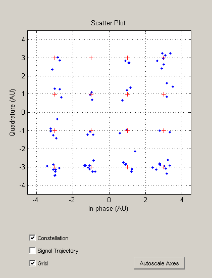
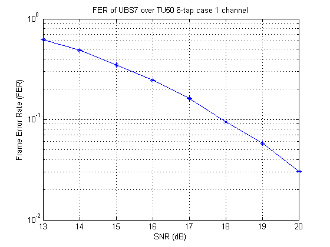

EGPRS Phase 2 Uplink Level B Simulation (Part I)
This demonstration shows how to use the Communications Toolbox™ to simulate the Uplink level B modulation and coding Scheme 7 (UBS-7) channel defined in the 3GPP EDGE Evolution Enhanced GPRS Phase 2 (EGPRS2) standard [ 1, 2 ]. The simulation employs several functions to model CRC, convolutional coding, including tail-biting and puncturing, interleaving, modulation, pulse shaping, fading channel simulation, equalization, and Viterbi decoding.
Contents
EGPRS2 Background
The 3GPP standard introduced General Packet Radio Service (GPRS) to support packet switched wireless data transmission over GSM networks. The Enhanced GPRS (EGPRS Phase 1) specifications increased the data rates by using 8-PSK modulation. In 2007, with the introduction of EGPRS Phase 2 (EGPRS2) even higher data rates are achieved through the use of higher modulation schemes such as 16- and 32-QAM. EGPRS2 Level B also introduced an increased symbol rate of 325 kSps as opposed to the legacy symbol rate of 270,833 kSps [ 2 ]. In this demo, we focus on the UBS-7 channel, which provides 44.8 kbps data rate [ 4 ]. We assume that PAN [ 4 ] is not included in the data. Some key system parameters are as follows [ 2, 4 ]:
Treduced = 1/325000; % Reduced symbol duration in seconds fc = 900e6; % Carrier frequency constellation = ... % 16-QAM constellation [1+1i, 1+3i, 3+1i, 3+3i, 1-1i, 1-3i, 3-1i, 3-3i, ... -1+1i, -1+3i, -3+1i, -3+3i, -1-1i, -1-3i, -3-1i, -3-3i]; M = length(constellation); % Number of symbols in the constellation dataLen = 940; % Number of data bits headerLen = 40; % Number of header bits infoLen = 450; % Number of information bits in one part numTailSyms = 4; % Number of tail symbols numEncSyms = 69; % Number of encrypted symbols per side numTrainSyms = 31; % Number of training symbols numGuardSyms = 10; % Integer number of guard symbols
Simulation Initialization
We initialize some simulation parameters. Normally, we would initialize all the components used in the simulation here. For the sake of the demo story, we will initialize components as we use them. We also initialized a scatter plot scope to examine the output of the equalizer.
% Simulation parameters Nsamp = 4; % Number of samples per symbol SNR = 25; % Signal to noise ratio in dB headerError = 0; % Header error counter dataError = 0; % Data error counter % Initialize scatter plot scope hScat = commscope.ScatterPlot('SamplingFrequency', 1/Treduced, ... 'SamplesPerSymbol', 1, 'Constellation', constellation); hScat.PlotSettings.Constellation = 'on'; close(hScat); % Close the scatter plot scope figure
Transmitter
The transmitter consists of data generation (RANDI), block constitution, parity addition (CRC.GENERATOR), convolutional coding with tail-biting and puncturing (CONVENC), interleaving (INTRLV), mapping on a burst, creating channel bursts, modulation (MODEM.GENQAMMOD), and pulse shaping (DFILT.DFFIR).
Data Generation
We generate equi-probable random data bits using the RANDI function. We use a local random stream to be able to obtain repeatable results.
% Create a local random stream to be used by random number generators hStr = RandStream('mt19937ar', 'Seed', 55408); % Generate a column vector of random bits d = randi(hStr, [0 1], dataLen, 1);
Block Constitution
Section 5.1a.10.1 of [ 4 ] separates the data bits into three parts: header, information part 1, and information part 2.
h = d(1:headerLen); % Header i1 = d(headerLen+1:headerLen+infoLen); % Information part 1 i2 = d(headerLen+infoLen+1:dataLen); % Information part 2
Header Coding - Parity Bits
Section 5.1a.10.2 of [ 4 ] defines the header coding, which comprises of appending parity bits and tail-biting convolutional code. First we add an 8-bit CRC to the header. We use the CRC generator, CRC.GENERATOR object, to append the CRC to the header. The CRC polynomial is given as [D^8+D^6+D^3+1]. The remainder of the polynomial division should be an all "1" vector as opposed to an all "0" vector.
[D^8+D^6+D^3+1] corresponds to a binary vector of [1 0 1 0 0 1 0 0 1]. The CRC generator by default calculates a CRC value that will result in an all "0" remainder. Since the remainder should be all "1," we apply a final xor with the all "1" vector.
% Create and configure the CRC generator. headerCRCGen = crc.generator('Polynomial', [1 0 1 0 0 1 0 0 1], ... 'FinalXOR', [1 1 1 1 1 1 1 1]); % Add CRC to the header bHeader = generate(headerCRCGen, h);
Header Coding - Tail-Biting Convolutional Encoding
The resulting bits are encoded using a tail-biting convolutional code, where the starting state of the convolutional encoder should be the same as the end state. We use CONVENC function for this purpose. The rate 1/3 constraint length 7 convolutional mother code is defined by polynomials: G4 = 1+D^2+D^3+D^5+D^6, G7 = 1+D+D^2+D^3+D^6, G5 = 1+D+D^4+D^6. We first need to create a trellis for this code using the POLY2TRELLIS function. Tail-biting is achieved by adding the last six bits of the CRC appended header to the beginning, which forces the starting state of the convolutional encoder to the end state.
% The octal representation of the polynomials are G4 = 133; % 1+D^2+D^3+D^5+D^6 G7 = 171; % 1+D+D^2+D^3+D^6 G5 = 145; % 1+D+D^4+D^6 constLen = 7; % Constraint length rateInv = 3; % Inverse of code rate % Create the trellis that represents the convolutional code convCode = poly2trellis(constLen, [G4 G7 G5]); % First append last 6 bits to the beginning. c = [bHeader(end-(constLen-2):end); bHeader]; % Encode the appended block with a regular convolutional encoder C = convenc(c, convCode); % Discard the encoded bits resulting from the first 6 appended bits pc = C((constLen-1)*rateInv+1:end);
Data Coding
Section 5.1a.10.3 of [ 4 ] describes the coding applied to the information parts of the data block. First we add parity bits that yield an all "1" remainder, when divided by the polynomial D^12+D^11+D^10+D^8+D^5+D+4+1. We will create a CRC.GENERATOR object similar to the header CRC, with this new polynomial. Then each information part is convolutionally encoded. The same polynomials as the header are used. The encoder is terminated at state 0 by adding constraint length minus 1 zeros at the end of the uncoded bits. The coded bits are then punctured. CONVENC function can employ puncturing.
% Create and configure the CRC generator. dataCRCGen = crc.generator('Polynomial', [1 1 1 0 1 0 0 1 1 0 0 0 1], ... 'FinalXOR', [1 1 1 1 1 1 1 1 1 1 1 1]); % Determine the puncturing pattern. A zero in the puncturing vector means % that bit is removed, while a one means it is kept. Note that, MATLAB(R) % arrays start with index 1. puncPat = ones(1404,1); jj=[4 8 10 14 20 23 25 29 30]; for k=0:41 puncPat(33*k+jj +1) = 0; end puncPat(33*42+[4 8 10 14] +1) = 0; puncPat(33*[6 12 18 24 30 36]+20 +1) = 1; % Add parity bits to the first part b1 = generate(dataCRCGen, i1); % Convolutionally encode the first part c = [b1; zeros(6,1)]; c1 = convenc(c, convCode, puncPat); % Add parity bits to the second part b2 = generate(dataCRCGen, i2); % Convolutionally encode the second part c = [b2; zeros(6,1)]; c2 = convenc(c, convCode, puncPat);
Interleaving
Section 5.1a.10.4 of [ 4 ] employs interleaving to the header and the data parts. The interleaver is defined as "i(jj) = c(k)", that is, jj index runs over the output signal. INTRLV function uses "i(k) = c(jj)", that is, jj index runs over the input. Therefore, we switched the jj and k indices.
% Calculate interleaver indices for header. Note that j is the input % index. B = @(k)(2*mod(k,2)+floor(mod(k,4)/2)); Nc = 144; a = 29; k = 0:Nc-1; jj = Nc*B(k)/4 + mod((floor(k/4) + floor(Nc/16)*B(k))*a, Nc/4); headerIntrlvVec(k +1) = jj +1; % Calculate interleaver indices for data. Note that jj is the input % index. Nc = 2056; a = 403; k = 0:Nc-1; jj = Nc*B(k)/4 + mod((floor(k/4) + floor(Nc/16)*B(k))*a, Nc/4); dataIntrlvVec(k +1) = jj +1; % Interleave coded header bits hi = intrlv(pc, headerIntrlvVec); % Interleave coded data bits dc = [c1; c2]; di = intrlv(dc, dataIntrlvVec);
Mapping on Bursts
Section 5.1a.10.6 of [ 4 ] describes how the interleaved bits are mapped onto four bursts. The bits are first divided into four groups, then some bits are swapped between these groups.
% Straightforward mapping. Each column represents a burst. Note that, % MATLAB arrays start with index 1. j0 = 1:258; j1 = 259:276; j2 = 277:278; j3 = 279:296; j4 = 297:552; q(1:8) = 0; e = zeros(552,4); for B=0:3 e(j0, B +1) = di(514*B+j0); e(j1, B +1) = hi(36*B+j1-258); e(j2, B +1) = q(2*B+j2-276); e(j3, B +1) = hi(36*B+j3-260); e(j4, B +1) = di(514*B+j4-38); end % Bit swapping k=[0 1 4 5 8 9 12 13 16 17 38 39 42 43 46 47 50 51 54 55] +1; dummy = e(240+k, :); e(240+k, :) = e(258+k, :); e(258+k, :) = dummy;
Channel Bursts
Section 5.2 of [ 2 ] and Section 5.2.3a of [ 3 ] describes how the payload bits are put into a burst structure that contains tail bits, training bits, and payload bits. For this demo, we use training sequence code (TSC) 0.
% Tail bits for the higher symbol rate burst (HB) tailBits = [0;0;0;1;0;1;1;0;0;1;1;0;1;1;0;1]; % TSC 0 for the higher symbol rate burst (HB) trainingBits = [... 0;0;1;1;1;1;1;1;0;0;1;1;0;0;1;1;1;1;1;1;0;0;1;1;0;0;1;1;0;0;1;1;... 1;1;1;1;0;0;1;1;1;1;1;1;1;1;1;1;1;1;1;1;1;1;1;1;1;1;1;1;1;1;1;1;... 1;1;1;1;0;0;1;1;0;0;1;1;1;1;1;1;0;0;1;1;1;1;1;1;1;1;1;1;1;1;1;1;... 1;1;1;1;0;0;1;1;0;0;1;1;1;1;1;1;1;1;1;1;1;1;1;1;0;0;1;1]; % Create four bursts. Each column represents a burst. bursts = [repmat(tailBits, 1, 4); ... e(1:276, :); ... repmat(trainingBits, 1, 4); ... e(277:552, :); ... repmat(tailBits, 1, 4); zeros(10*log2(M), 4)];
Modulation
UBS-7 channel employs 16-QAM modulation [ 2 ]. The constellation is defined in [ 5 ]. We use general QAM modulator object, MODEM.GENQAMMOD, and setup the modulator to accept a bit stream as input. The modulator treats each column of the input matrix as an independent channel. [ 5 ] also requires a continuous pi/4 degree rotation of the output for each symbol.
% Create a 16-QAM modulator with the given constellation hMod = modem.genqammod('Constellation', constellation, 'InputType', 'Bit'); % Map bits to symbols s = modulate(hMod, bursts); % Rotate the symbols pi/4 degrees continuously numBurstSyms = (numTailSyms + numEncSyms + numTrainSyms + numEncSyms ... + numTailSyms + numGuardSyms); sHat = s .* exp(1i*repmat((0:numBurstSyms-1)', 1, 4)*pi/4);
Pulse Shaping
Pulse format, which selects the pulse shaping filter for UBS-7 channel, is defined in [ 1 ]. In this demo, we use the spectrally wide pulse shape defined in [ 5 ]. We use a digital direct form FIR filter. More efficient implementations of multi-rate filters are available with the MFILT package, which is a part of the Filter Design Toolbox™.
% Get the filter coefficients for the spectrally wide pulse shape c0 = commEGPRSWidePulse(Nsamp); sigPow = 10*log10((sum(c0.^2)*mean(abs(constellation).^2))/Nsamp); % Create a pulse shaping filter and normalize maximum response to 1 hPulseShape = dfilt.dffir(c0/max(c0)); % Determine the filter delay for synchronization filtDelay = (length(c0) - 1)/2; % Upsample and filter y = filter(hPulseShape, upsample(sHat, Nsamp));
Channel
We pass the baseband samples through a fading channel as defined in [<#25 6> ] and add additive white Gaussian noise. We use the channel model defined by the typical case for urban area (TUx), 6 taps, case 1. We created the channel using the STDCHAN function, which provides pre-configured channel models for various standards. We set the vehicle speed to 50 km/h.
% Create a typical urban channel model for 50 km/h speed fd = (50e3/3600)*fc/3e8; hChan = stdchan(Treduced/Nsamp, fd, 'gsmTUx6c1'); r = zeros(size(y)); for B=0:3 yCh = filter(hChan, y(:,B +1)); r(:, B +1) = awgn(yCh, SNR, sigPow, hStr); end
Receiver
The receiver consists of matched filtering, down sampling, derotation, equalization (RLS, DFE), demodulation (MODEM.GENQAMDEMOD), demapping from bursts, deinterleaving (DEINTRLV), decoding (VITDEC), and parity check (CRC.DETECTOR).
Matched Filtering, Down Sampling, and Derotation
We filter the received signal with the same pulse shaping filter and down sample. We assume perfect synchronization. In a real system, the receiver would have to search for the training symbols to synchronize. We also derotate the symbols.
% Determine number of rcv samples to pass to the next stage numRcvSyms = (numTailSyms + numEncSyms + numTrainSyms + numEncSyms ... + numTailSyms + 4); numRcvSamps = numRcvSyms * Nsamp; % Match filter and down sample yR = filter(hPulseShape, r); sHatR = yR(2*filtDelay+1:Nsamp:numRcvSamps+2*filtDelay, :); % Remove phase rotation sR = sHatR .* exp(-1i*repmat((0:numRcvSyms-1)', 1, 4)*pi/4);
Equalization and Demodulation
Before demodulation, we need to remove the channel impairments. In this demo, we chose to use a decision feedback equalizer (DFE). Even though equalization schemes, such as reduced state maximum likelihood sequence estimator, are more often employed in commercial systems, we chose DFE to simplify this demonstration. The Communications Toolbox provides a DFE equalizer object, where the user can choose from several adaptive algorithms. We use the RLS algorithm to adapt the equalizer taps. Since the training symbols are in the middle of the burst, we need to process symbols from the middle of the burst towards the start to equalize the first part of the payload and from middle towards the end to equalize the second part of the payload.
We use a 16-QAM demodulator with soft outputs. The demodulator employs the approximate log-likelihood ratio (LLR) algorithm. This algorithm requires the noise variance at the input of the demodulator. We use the equalizer error output to estimate noise variance.
% Create an RLS algorithm object with forgetting factor 0.9 hAlg = rls(0.9); % Create a DFE equalizer, which uses RLS algorithm, with 7 forward and 4 % feedback taps hEq = dfe(7, 4, hAlg, hMod.Constellation); % Create an approximate LLR 16-QAM demodulator based on the modulator hDemod = modem.genqamdemod(hMod); hDemod.DecisionType = 'Approximate LLR'; % Determine the boundaries of the payload for equalization part1Start = numTailSyms+numEncSyms+numTrainSyms; part1End = 1; part2Start = numTailSyms+numEncSyms+1; part2End = part2Start+numTrainSyms+numEncSyms+numTailSyms-1; eR = zeros(552, 4); for B=0:3 % First part. Start by resetting the equalizer reset(hEq) % Equalize from middle to start [sModR, ~, er] = equalize(hEq, sR(part1Start-2:-1:part1End, B +1), ... s(part1Start:-1:part1Start-31+1, B +1)); % Estimate noise at the output of the equalizer hDemod.NoiseVariance = var(er(numTrainSyms+1:numTrainSyms+numEncSyms)); % Soft demodulate eR(1:276, B +1) = demodulate(hDemod, ... sModR(numTrainSyms+numEncSyms:-1:numTrainSyms+1)); % Create a scatter plot update(hScat, sModR(numTrainSyms+numEncSyms:-1:numTrainSyms+1), ... s(numTailSyms+1:numTailSyms+numEncSyms, B +1)); pause(0.2) % Second part. Start by resetting the equalizer reset(hEq) % Equalize from middle to end [sModR a er] = equalize(hEq, sR(part2Start+2:part2End+2, B +1), ... s(part2Start:part2Start+31, B +1)); % Estimate noise at the output of the equalizer hDemod.NoiseVariance = var(er(numTrainSyms+1:numTrainSyms+numEncSyms)); % Soft demodulate eR(277:552, B +1) = demodulate(hDemod, ... sModR(numTrainSyms+1:numTrainSyms+numEncSyms)); % Create a scatter plot update(hScat, sModR(numTrainSyms+1:numTrainSyms+numEncSyms), ... s(part1Start+1:part1Start+numEncSyms, B +1)); pause(0.2) end
Demapping from Bursts
Next, we combine the received soft bits from the four bursts to create encoded header and data blocks.
% Bit unswapping k=[0 1 4 5 8 9 12 13 16 17 38 39 42 43 46 47 50 51 54 55] +1; dummy = eR(240+k, :); eR(240+k, :) = eR(258+k, :); eR(258+k, :) = dummy; % Straightforward demapping j0 = 1:258; j1 = 259:276; j2 = 277:278; j3 = 279:296; j4 = 297:552; diR = zeros(940,1); hiR = zeros(40,1); qR(1:8) = 0; for B=0:3 diR(514*B+j0) = eR(j0, B +1); hiR(36*B+j1-258) = eR(j1, B +1); qR(2*B+j2-276) = eR(j2, B +1); hiR(36*B+j3-260) = eR(j3, B +1); diR(514*B+j4-38) = eR(j4, B +1); end
Deinterleaving
We deinterleave the received bits using the DEINTRLV function.
pcR = deintrlv(hiR, headerIntrlvVec); dcR = deintrlv(diR, dataIntrlvVec);
Decode Header
We use a soft decision Viterbi decoder to decode the header, where the inputs are unquantized soft values. Since tail-biting is employed, we first need to determine the starting state of the encoder, which is the same as the end state. We can run the VITDEC function in truncated mode, where the input is two copies of the received header block. When the second copy is started to be decoded, the decoder will be in the end state of the first copy, which is the same as the start state. We select the outputs for the second copy as the decoded bits.
We detect errors in the decoded header using the CRC detector. We use the CRC.DETECTOR object.
% Run the traceback over the whole block tbLen = length(pcR)/rateInv; % Decode two copies of the received block consecutively and select the % outputs from the second copy cR = vitdec([pcR; pcR], convCode, tbLen, 'trunc', 'unquant'); cR = cR(tbLen+1:end, 1); % Create a CRC detector based on the CRC generator headerCRCDec = crc.detector(headerCRCGen); % Detect if there was an error using the parity bits [bR errorFlag] = detect(headerCRCDec, cR); % Check for errors if errorFlag headerError = headerError + 1; end
Decode Data
We decode the information parts in a similar way. Since information parts are coded using the terminated convolutional encoder, we use the VITDEC function with the terminated mode. We also provide the puncturing pattern to the VITDEC function. We check for errors in the information parts using the parity bits.
% Determine the minimum traceback length tbLen = 5 * constLen; % If the header was not in error, decode data if ~errorFlag % Get part 1 and 2 of the data c1R = dcR(1:1028, 1); c2R = dcR(1029:end, 1); % Convolutional decoding for the first part b1R = vitdec(c1R, convCode, tbLen, 'term', 'unquant', puncPat); % Create a CRC detector based on the CRC generator dataCRCDec = crc.detector(dataCRCGen); % Detect if there were errors in the first part using parity bits [i1R errorFlag1] = detect(dataCRCDec, b1R(1:462)); % Convolutional decoding for the second part b2R = vitdec(c2R, convCode, tbLen, 'term', 'unquant', puncPat); % Detect if there were errors in the second part using parity bits [i2R errorFlag2] = detect(dataCRCDec, b2R(1:462)); else errorFlag1 = 1; errorFlag2 = 1; end if errorFlag1 || errorFlag2 dataError = dataError + 1; end
Report Results
Based on the CRC detectors output, we decide on packet errors. For this single run, we did not detect any errors.
fprintf('Number of header errors: %d\nNumber of frame errors: %d\n', ... headerError, dataError)
Number of header errors: 0 Number of frame errors: 0
Run a Simulation
We also provided a MATLAB® script, simEGPRS2Uplink.m, that combines the parts discussed in this demo in a more efficient simulation format. The script runs a number of packets through the same setup for several SNR values. Since this simulation takes a long time, in this demo we only provide the result of the simulation run for 10000 packets stored in a MAT-file.
% Load the results and plot load EGPRS2UplinkDemoResults fer err SNR semilogy(SNR, fer,'-*'); grid on xlabel('SNR (dB)') ylabel('Frame Error Rate (FER)') title('FER of UBS7 over TU50 6-tap case 1 channel')
Further Exploration
You can modify parts of this demo or the simulation script to explore different receiver structures and their performance over different channels.
You can select a different channel using the STDCHAN function or you can create your own channel model from scratch using the RAYLEIGHCHAN or RICIANCHAN function.
You can use a different equalizer structure using LINEAREQ or MLSEEQ functions. You can also change the adaptation algorithm using the LMS, SIGNLMS, NORMLMS, VARLMS, or CMA functions.
You can use different flavors of Viterbi decoder using 'hard' or 'soft' options of the VITDEC function, to experiment with hard decision decoding or quantized soft decision decoding, respectively.
Selected Bibliography
- 3GPP TS 44.060, "GPRS; MS-BSS interface; RLC/MAC protocol," Release 8, v8.2.0, 2008-2009
- 3GPP TS 45.001, "Radio Access Network; Physical layer on the radio path; General description," Release 7, v7.8.0, 2008-08
- 3GPP TS 45.002, "Radio Access Network; Multiplexing and multiple access on the radio path," Release 7, v7.7.0, 2008-05
- 3GPP TS 45.003, "Radio Access Network; Channel coding," Release 7, v7.5.0, 2008-05
- 3GPP TS 45.004, "Radio Access Network; Modulation," Release 7, v7.2.0, 2008-02
- 3GPP TS 45.005, "Radio Access Network; Radio transmission and reception," Release 8, v8.1.0, 2008-05